Выявленная средняя линия нормируемого отверстия должна быть расположена между двумя параллельными плоскостями, которые находятся друг от друга на расстоянии 0,08 и составляют теоретически точный угол 60° с общей базовой осью А-В, образованной базовыми элементами А и В, см. рисунок ниже
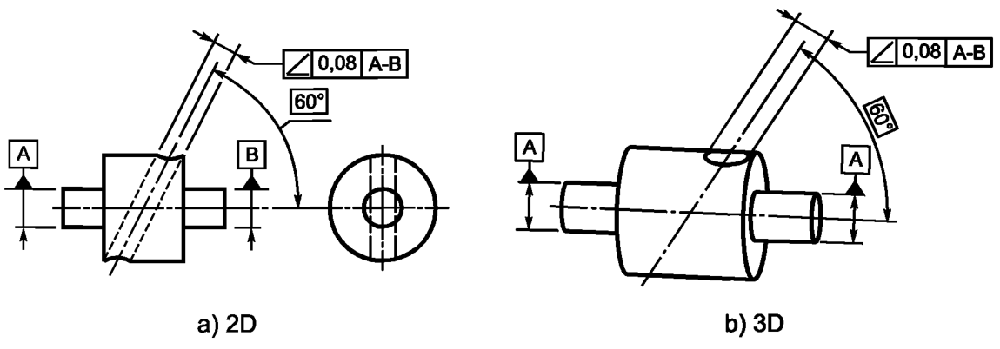Номинальная средняя линия и базовая ось лежат в одной плоскости. Поле допуска ограничено двумя параллельными плоскостями, которые расположены друг от друга на расстоянии, равном значению допуска t, и наклонены относительно базы на заданный теоретически точный угол a, см. рисунок ниже
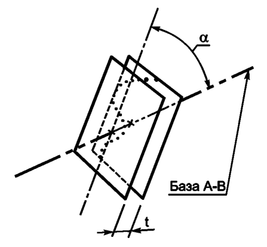Выявленная средняя линия нормируемого отверстия должна быть расположена между двумя параллельными плоскостями, которые находятся друг от друга на расстоянии 0,08 и составляют теоретически точный угол 60° с общей базовой осью А-В, образованной базовыми элементами А и В, см. рисунок ниже
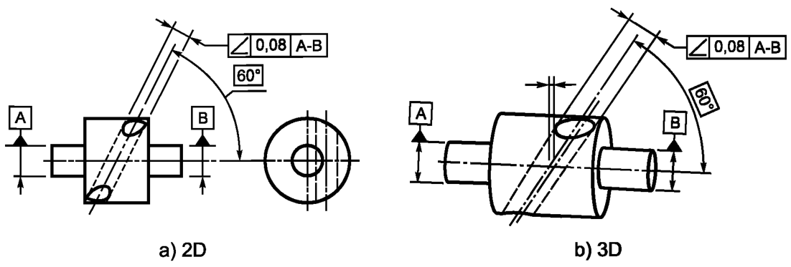Номинальная средняя линия и базовая ось не лежат в одной плоскости. Поле допуска ограничено двумя параллельными плоскостями, которые расположены друг от друга на расстоянии, равном значению допуска t, и наклонены относительно базы на заданный теоретически точный угол a, см. рисунок ниже
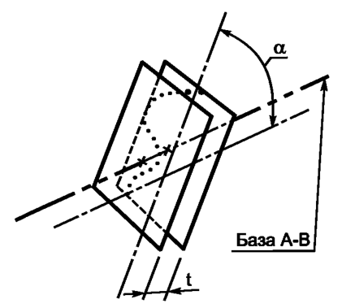Выявленная средняя линия нормируемого отверстия должна быть расположена между двумя параллельными плоскостями, которые находятся друг от друга на расстоянии 0,08 и составляют теоретически точный угол 60° с базовой плоскостью А, см. рисунок ниже
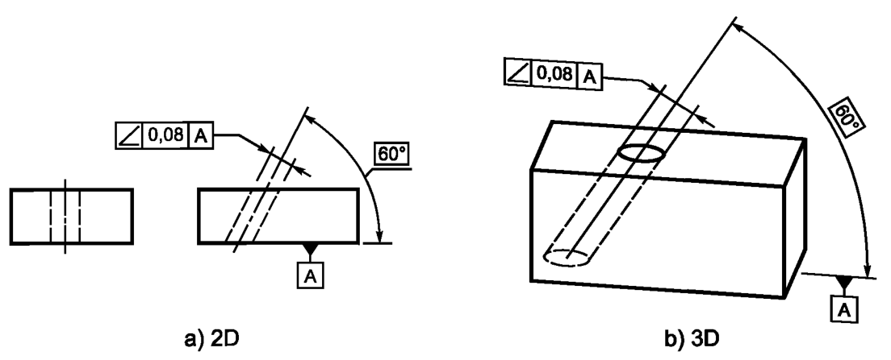Поле допуска ограничено двумя параллельными плоскостями, которые расположены друг от друга на расстоянии, равном значению допуска t, и наклонены относительно базы на заданный теоретически точный угол a, см. рисунок ниже
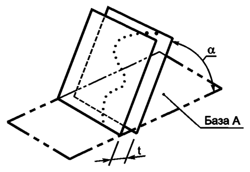Выявленная средняя линия нормируемого отверстия должна быть расположена внутри цилиндрической области, диаметр которой равен 0,1, а ось - параллельна базовой плоскости В и составляет теоретически точный угол 60° с базовой плоскостью А, см. рисунок ниже
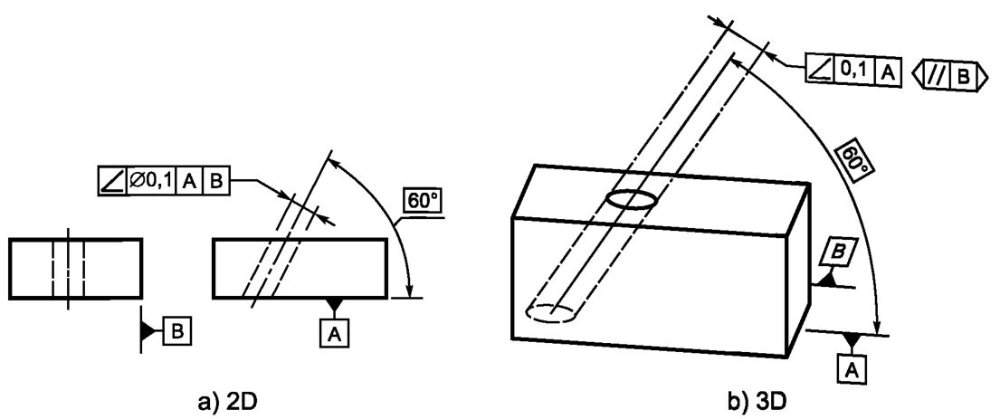Поле допуска ограничено цилиндрической областью, диаметр которой равен значению допуска t, а ось - параллельна базовой плоскости В и составляет заданный теоретически точный угол а с базовой плоскостью А, см. рисунок ниже
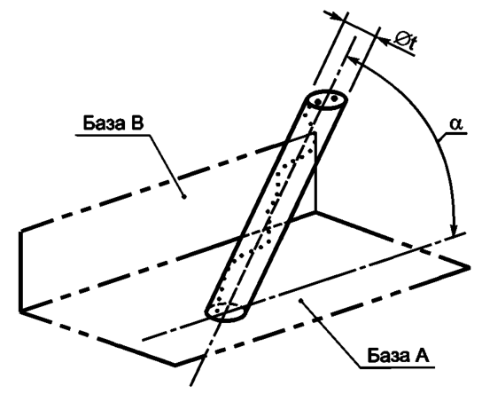Выявленная нормируемая поверхность должна быть расположена между двумя параллельными плоскостями, которые находятся друг от друга на расстоянии 0,1 и составляют теоретически точный угол 75° с базовой осью А, см. рисунок ниже
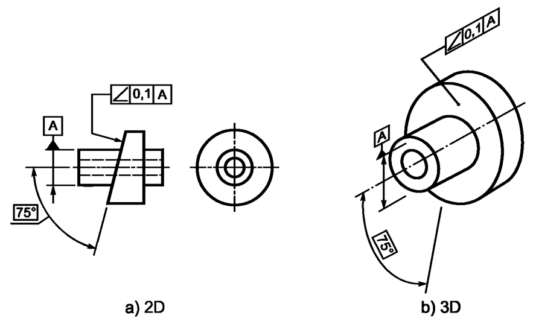Поле допуска ограничено двумя параллельными плоскостями, которые расположены друг от друга на расстоянии, равном значению допуска t, и наклонены относительно базы на заданный теоретически точный угол а, см. рисунок ниже
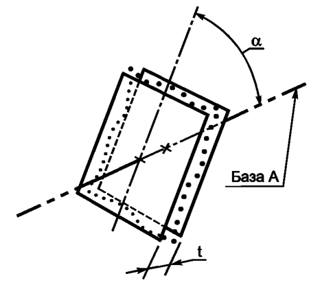Выявленная нормируемая поверхность должна быть расположена между двумя параллельными плоскостями, которые находятся друг от друга на расстоянии 0,08 и составляют теоретически точный угол 40° с базовой плоскостью А, см. рисунок ниже
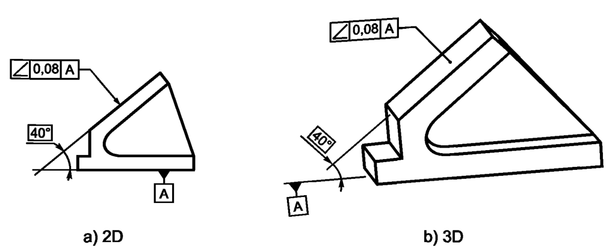Поле допуска ограничено двумя параллельными плоскостями, которые расположены друг от друга на расстоянии, равном значению допуска t, и наклонены относительно базы на заданный теоретически точный угол а, см. рисунок ниже
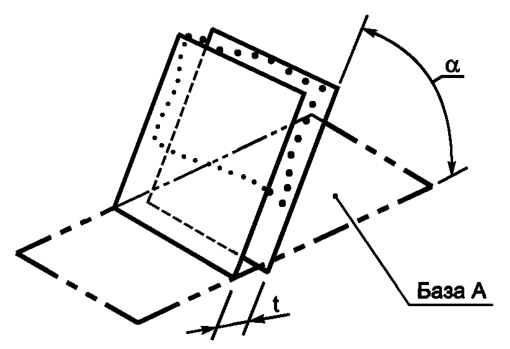